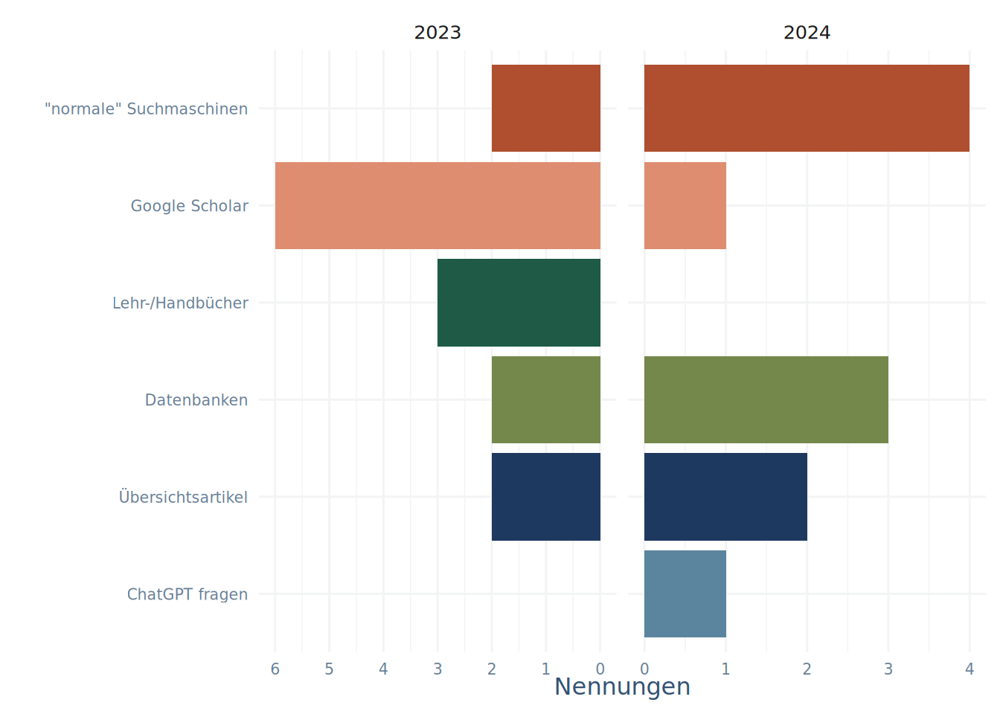
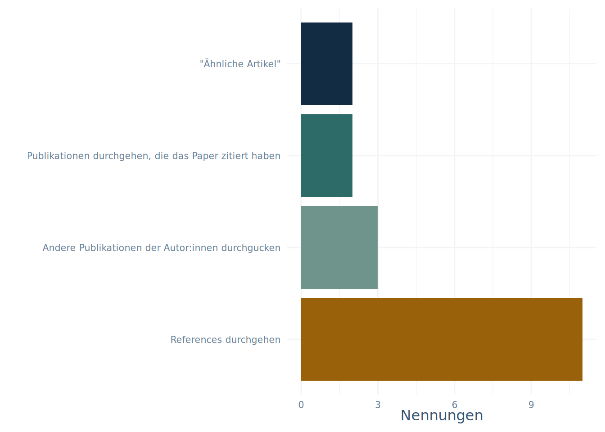
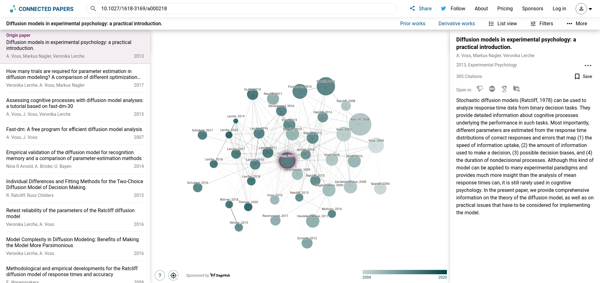
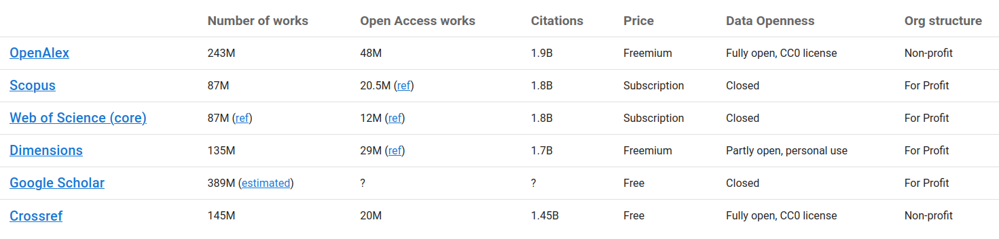
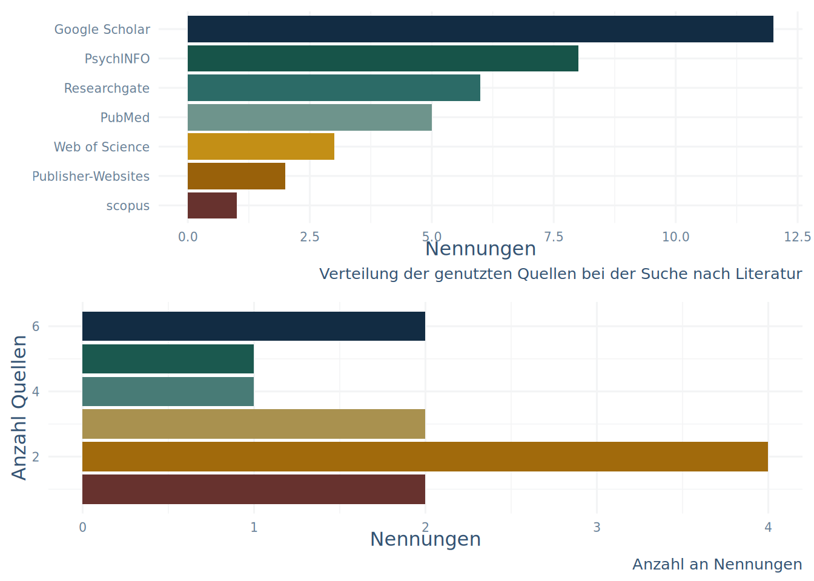

Literatur finden
Ohne Startpunkt
Manchmal muss Literatur gesucht werden, ohne dass es ein Paper, einen Autoren oder eine Arbeit gibt, die als Ursprungspunkt für die Suche genutzt werden kann.
Zu dieser Art der Suche wurden in der Umfrage die in Abbildung 3.1 zu sehenden, groben Antwort-Kategorien angegeben.
Mit den groben Kategorien sind die folgenden, ungefähren Vorgehensweisen gemeint:
Google Scholar: Die Suche des groben Themas in der akademischen Version der beliebten Suchmaschine
Lehr-/Handbücher: Wenn schon aus dem Studium o.ä. bekannt ist, in welchem groben Themenbereich das Objekt der Suche einzuordnen ist, schadet es nicht, in entsprechenden Lehrbüchern nachzuschlagen. Die Infos sind dann aber wahrscheinlich nicht die aktuellsten.
Datenbanken: Hiermit sind die gängigen Datenbanken zur Suche von Literatur gemeint, in Tabelle 3.1 findet Ihr eine (nicht vollständige) Übersicht über Datenbanken und andere Quellen. Bei grober Themen-Suche muss aber darauf geachtet werden, dass je nach Datenbank nicht unbedingt Synonyme mitgesucht werden.
Übersichtsartikel: Dieser Punkt ist nicht ohne 1 und 3 zu denken, beide Such-Möglichkeiten bieten aber die Möglichkeit, Übersichtsartikel als Suchkriterium einzustellen.
| Name | Scope | Open Data | Zugang aus Uninetz/mit Uni-Account |
|---|---|---|---|
| APA PsycInfo | Datenbank der APA - hauptsächlich psychologische Fachartikel | Nein | Ja |
| PSYNDEXplus Literature and Audiovisual Media | Datenbank des ZPID - deutschsprachig-psychologische Fachliteratur | Nein | Ja |
| Pubmed | Datenbank des NCBI der US - Biologie, Medizin, für Psychologen vor allem interessant: klinische und Neuropsychologie | Ja | |
| OpenAlex | Offene Sammlung von Forschungsarbeiten - (Fast) alle Forschungsbereiche | Ja | |
| Crossref | Offene Sammlung von Forschungsarbeiten - (Fast) alle Forschungsbereiche | Ja (über API) | |
| Scopus | Datenbank von Elsevier - (Fast) alle Forschungsbereiche | Nein | Ja |
| Dimensions | Datenbank von Digital Science - (Fast) alle Forschungsbereiche | Nein | Frei für private Nutzung |
| Web of Science | Datenbank von Clarivate - (Fast) alle Forschungsbereiche | Nein | Ja |
| Google Scholar | Suchmaschine von Google - Alle Forschungsbereiche | Nein | Nutzung kostenlos |
| Researchgate | Akademisches soziales Netzwerk - Alle Forschungsbereiche | Nein | Nutzung kostenlos |
Das genaue Item in der Umfrage war hier: “Wenn ich zu einem groben Thema recherchiere, wenn ich also zum Beispiel weiß, dass mich der Zusammenhang von Intelligenz und Schokolade interessiert, gehe ich wie folgt vor:”
Ein paar der Antworten zu den einzelnen Strategien waren über die allgemeine Beschreibung als Tipps sehr hilfreich, zum Beispiel die folgende zu Google Scholar:
Begriffe (bspw. Schokolade, Intelligenz) auf Englisch und mit möglichst vielen Synonymen in Suchmaschinen eingeben (u.a. Google Scholar, Universitätsbibliothek)
Zu den Datenbanken ist folgendes Beispiel zum Einsatz von logischen Operatoren außerdem sehr hilfreich:
ich suche in verschiedenen Datenbanken nach: “Zusammenhang” AND “Intelligenz” AND “Schokolade”. Bei zu wenigen Ergebnissen mache ich meine Suche offener, z.B. “Intelligenz” AND “Schokolade”.
Je nach Datenbank wird eine Auswahl an logischen Operatoren zugelassen, für eine Anleitung zu effektiven Suchstrategien ist die Anleitung zu Pubmed von der Johns Hopkins Universität ganz gut. Die Anleitung hat viele PubMed-spezifische Punkte, die Teile 4,5 und 6 haben aber auch gute Hinweise, die sich auf andere Datenbanken generalisieren lassen.
Außerdem wurde in der Umfrage die etwas engere Frage gestellt, wie vorgegangen wird, wenn schon spezifische Schlagworte, die für das Thema relevant sind, bekannt sind.
Dazu waren die folgenden Hinweise ergänzend zu den bisher genannten Punkten noch sehr hilfreich:
[…] Falls ich weiß, dass ein bestimmtes Journal häufiger Studien zu diesem Thema veröffentlicht, suche ich gezielt auf den Webseiten (z.B. JSTOR, PubMed, etc.) nach dem Journal und Keywords oder nutze die Wortsuche. Sollte ich auch noch eine Jahresgrenze habe, würde ich danach filtern.
Und ein Tool genannt, das zumindest ich noch nicht kannte:
Ich suche nach den Autoren und Stichpunkten um das Paper zu finden. Zum Teil verwende ich connected papers.
Zu Connected Papers später mehr. Zuerst könnt Ihr aber versuchen die Aufgabe aus dem Fragebogen zu beantworten:
Aufgabe
- Finde einen Übersichtsartikel, der sich mit dem Zusammenhang von Kognitiver Leistungsfähigkeit und Schokoladenkonsum auseinandersetzt.
Mit Startpunkt
Die zumindest im Rahmen der Abschlussarbeit realistischere Situation ist aber ja die, mit einer Auswahl an Ausgangspapern zu starten.
Dazu wurden in der Umfrage die Frage gestellt, wie beim Start mit einer Ausgangsarbeit vorgegangen wird. Die (wieder gruppierten) Ergebnisse sind in Abbildung 3.2 zu sehen.

Mit den Kategorien ist im Einzelnen das folgende gemeint:
References durchgehen: Entweder beim Lesen des Papers Referenzen an relevanten Teilen raussuchen oder direkt die Literaturliste durchgehen und interessante Titel organisieren.
Andere Publikationen der Autor:innen durchgucken: In Suchmaschinen oder Datenbanken nach den Autor:innen suchen und in den Publikationslisten nach anderen thematisch relevanten Publikationen suchen.
Publikationen durchgehen, die das Paper zitiert haben: Bei z.B. dem Web of Science, Google Scholar und Pubmed gibt es die Möglichkeit, sich Paper anzeigen zu lassen, die ein Ausgangspaper zitiert haben. Diese Strategie ist insbesondere hilfreich um zum Einen aktuellere Studien zum Thema zu finden, zum Anderen um sein eigenes Paper gegen aktuelle Arbeiten abzugrenzen. Beispiele hierfür sind in Abbildung 3.3 mit roten Pfeilen eingezeichnet.
“Ähnliche Artikel”: Bei einigen der typischen Datenbanken und Scholar gibt es eine Schaltfläche um sich ähnliche oder verwandte Artikel anzeigen zu lassen. In Abbildung 3.3 mit den blauen Pfeilen eingezeichnet.
Zu dem Item in der Umfrage war insbesondere die folgende Antwort sehr interessant:
[…] Es gibt zudem Webseiten, auf denen direkt nach ähnlichen Artikeln gesucht werden kann und zusätzlich „verwandte“ Studien angezeigt werden, die sich mit einem ähnlichen Thema befasst haben.
Beispiele für solche Seiten sind Digital/AI Research Assistants, die mit Hilfe von Sprachmodellen und/oder anderer Algorithmik die Literaturrecherche unterstützen. Bei der DGI gibt es einen Einführungsartikel der ganz interessant ist. Der Autorengruppe geschuldet ist er vor allem auf die Implikationen für Informationsinfrastrukturen (also Bibliotheken o.ä.) ausgelegt, die Einführung ist trotzdem ganz brauchbar.
Beispiele die Ihr ausprobieren könnt wären:
- Researchrabbit (Anmeldung mit E-Mailadresse erforderlich; kostenlos)
- Elicit (Anmeldung mit E-Mailadresse erforderlich; kostenlos)
- Inciteful (keine Anmeldung notwendig)
Ein Punkt zur Nutzung von (KI-)Werkzeugen
Für alle (KI-)Werkzeuge die Ihr beim Erstellen von Arbeiten nutzt gilt immer:
Ihr seid haftbar für das Ergebnis!
Es liegt also in Eurer Verantwortung die mit KI generierten Inhalte genau zu überprüfen und anzupassen!
KI-Assistenzen werden nie fehlerfrei arbeiten!
Der in einem der Kommentare genannte Service connected papers ist auch ein digitaler Research Assistent - so weit ich das einsehen kann aber ohne Sprachmodell im Hintergrund.
Der Service nutzt aus, dass sich Publikationen und deren Zitations-Beziehungen als mathematischer Graph darstellen lassen. Das eröffnet die Möglichkeit, zentrale Publikationen für einen Forschungsbereich über ihre Vernetzung mit den restlichen Arbeiten zu entdecken. In Abbildung 3.4 ist ein solcher Graph abgebildet.

Mit Inciteful lässt sich ein ähnlicher Graph erstellt werden.
Solltet Ihr daran Interesse haben, kann man Zitationsgraphen übrigens auch mit R generieren, dazu gibt es hier ein Beispiel wie man mit OpenCitations Daten sammelt und hier ein Beispiel wie man mit igraph einen Graphen erstellt.
Aufgabe
Rufe den Übersichtsartikel über Kognitive Leistungsfähigkeit und Schokoladenkonsum noch einmal auf. Suche auf Pubmed und Dimensions nach ähnlichen Artikeln.
Suche auf Open Alex nach einem anderen Artikel der Erstautor:in, der dich interessiert.
Erstelle einen Graphen mit connected papers zu dem Übersichtsartikel
Erstelle einen Graphen zum selben Artikel mit Inciteful. Vergleiche die Graphen.
Fazit
Es gibt einen Haufen an Datenquellen, die alle etwas andere Ausrichtungen und deutlich andere Pflege- und Listungs-Strategien aufweisen (in Abbildung 4.1 ist eine Übersicht zu sehen). Mit anderen Worten wird man je nach Quelle zu anderen Ergebnissen kommen. Das gilt sowohl für die Quantität, als auch für die Qualität der Ergebnisse.

Die Assistenz-Werkzeuge kranken auch an diesem Problem, da sie ihre Daten aus einer der Quellen beziehen müssen. Verlasst Euch also nicht ausschließlich auf eine Anlaufstelle.
In der Umfrage hat sich aber auch so ergeben, dass die meisten von Euch mehrere Quellen in Ihren Suchen mit-einbeziehen (Abbildung 4.2).
